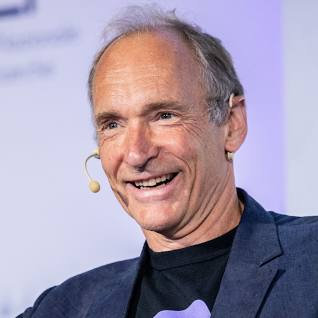

HTML Founder, Website Developer & Mentor
"I love to design and code beautifully simple things."
About
Sir Timothy John Berners-Lee (born 8 June 1955), also known as TimBL, is an English computer scientist best known as the inventor of the World Wide Web, the HTML markup language, the URL system, and HTTP. He is a professorial research fellow at the University of Oxford and a professor emeritus at the Massachusetts Institute of Technology (MIT).
Berners-Lee proposed an information management system on 12 March 1989 and implemented the first successful communication between a Hypertext Transfer Protocol (HTTP) client and server via the Internet in mid-November. He devised and implemented the first Web browser and Web server, and helped foster the Web's subsequent explosive development. He is the founder and director of the World Wide Web Consortium (W3C), which oversees the continued development of the Web. He co-founded (with Rosemary Leith) the World Wide Web Foundation. In April 2009, he was elected as Foreign Associate of the National Academy of Sciences.
Berners-Lee is a senior researcher and holder of the 3Com founder's chair at the MIT Computer Science and Artificial Intelligence Laboratory (CSAIL). He is a director of the Web Science Research Initiative (WSRI) and a member of the advisory board of the MIT Center for Collective Intelligence. In 2011, he was named as a member of the board of trustees of the Ford Foundation. He is a founder and president of the Open Data Institute and is currently an advisor at social network MeWe. In 2004, Berners-Lee was knighted by Queen Elizabeth II for his pioneering work. He received the 2016 Turing Award "for inventing the World Wide Web, the first web browser, and the fundamental protocols and algorithms allowing the Web to scale". He was named in Time magazine's list of the 100 Most Important People of the 20th century and has received a number of other accolades for his invention.
Early Life
Berners-Lee was born on 8 June 1955 in London, England, the eldest of the four children of Mary Lee Woods and Conway Berners-Lee; his brother Mike is a professor of ecology and climate change management. His parents were computer scientists who worked on the first commercially built computer, the Ferranti Mark 1. He attended Sheen Mount Primary School, and then went on to attend south-west London's Emanuel School from 1969 to 1973, at the time a direct grant grammar school, which became an independent school in 1975. A keen trainspotter as a child, he learnt about electronics from tinkering with a model railway. He studied at The Queen's College, Oxford, from 1973 to 1976, where he received a first-class Bachelor of Arts degree in physics. While at university, Berners-Lee made a computer out of an old television set, which he bought from a repair shop.
Career and Research
After graduation, Berners-Lee worked as an engineer at the telecommunications company Plessey in Poole, Dorset. In 1978, he joined D. G. Nash in Ferndown, Dorset, where he helped create typesetting software for printers. Berners-Lee worked as an independent contractor at CERN from June to December 1980. While in Geneva, he proposed a project based on the concept of hypertext, to facilitate sharing and updating information among researchers. To demonstrate it, he built a prototype system named ENQUIRE. After leaving CERN in late 1980, he went to work at John Poole's Image Computer Systems, Ltd, in Bournemouth, Dorset. He ran the company's technical side for three years. The project he worked on was a "real-time remote procedure call" which gave him experience in computer networking. In 1984, he returned to CERN as a fellow.
In 1989, CERN was the largest Internet node in Europe and Berners-Lee saw an opportunity to join hypertext with the Internet: "I just had to take the hypertext idea and connect it to the TCP and DNS ideas and—ta-da!—the World Wide Web. Creating the web was really an act of desperation, because the situation without it was very difficult when I was working at CERN later. Most of the technology involved in the web, like the hypertext, like the Internet, multifont text objects, had all been designed already. I just had to put them together. It was a step of generalising, going to a higher level of abstraction, thinking about all the documentation systems out there as being possibly part of a larger imaginary documentation system." — Tim Berners-Lee
Berners-Lee wrote his proposal in March 1989 and, in 1990, redistributed it. It then was accepted by his manager, Mike Sendall, who called his proposals "vague, but exciting". Robert Cailliau had independently proposed a project to develop a hypertext system at CERN, and joined Berners-Lee as a partner in his efforts to get the web off the ground. They used similar ideas to those underlying the ENQUIRE system to create the World Wide Web, for which Berners-Lee designed and built the first web browser. His software also functioned as an editor (called WorldWideWeb, running on the NeXTSTEP operating system), and the first Web server, CERN HTTPd (short for Hypertext Transfer Protocol daemon).
Berners-Lee published the first web site, which described the project itself, on 20 December 1990; it was available to the Internet from the CERN network. The site provided an explanation of what the World Wide Web was, and how people could use a browser and set up a web server, as well as how to get started with your own website. On 6 August 1991, Berners-Lee first posted, on Usenet, a public invitation for collaboration with the WorldWideWeb project. In a list of 80 cultural moments that shaped the world, chosen by a panel of 25 eminent scientists, academics, writers and world leaders, the invention of the World Wide Web was ranked number one, with the entry stating, "The fastest growing communications medium of all time, the Internet has changed the shape of modern life forever. We can connect with each other instantly, all over the world." In 1994, Berners-Lee founded the W3C at the Massachusetts Institute of Technology. It comprised various companies that were willing to create standards and recommendations to improve the quality of the Web. Berners-Lee made his idea available freely, with no patent and no royalties due. The World Wide Web Consortium decided that its standards should be based on royalty-free technology, so that they easily could be adopted by anyone.
Personal Life
Berners-Lee has said "I like to keep work and personal life separate." Berners-Lee married Nancy Carlson, an American computer programmer, in 1990. She was also working in Switzerland at the World Health Organization. They had two children and divorced in 2011. In 2014, he married Rosemary Leith at the Chapel Royal, St. James's Palace in London. Leith is a Canadian Internet and banking entrepreneur and a founding director of Berners-Lee's World Wide Web Foundation. The couple also collaborate on venture capital to support artificial intelligence companies.
Berners-Lee was raised as an Anglican, but he turned away from religion in his youth. After he became a parent, he became a Unitarian Universalist (UU). When asked whether he believes in God, he stated: "Not in the sense of most people, I'm atheist and Unitarian Universalist." The web's source code was auctioned by Sotheby's in London during 23–30 June 2021, as a non-fungible token (NFT) by TimBL. Selling for USD $5,434,500, it was reported the proceeds would be used to fund initiatives by TimBL and Leith.